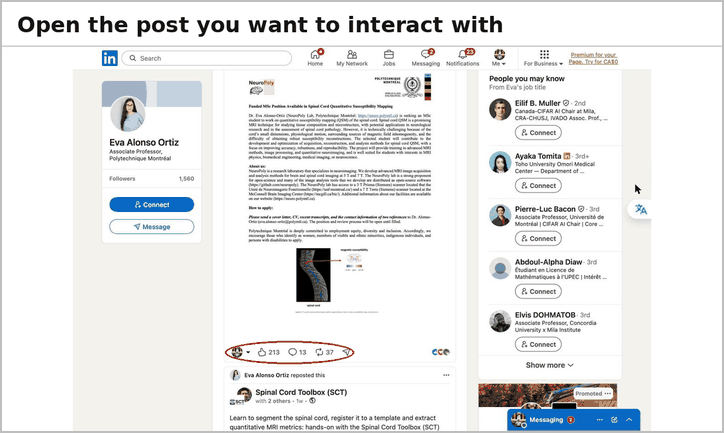

💼 LinkedIn guidelines#
LinkedIn is where we share what happens in the lab. See Socials for the rules that apply to every channel.
Our pages#
Spinal Cord Toolbox (SCT): https://www.linkedin.com/showcase/spinal-cord-toolbox-sct/
Both pages are managed by volunteer students (currently Paul Hoareau and Youssef Laatar). Contact them on Slack.
QR codes#
Use these on posters, slides and flyers. The labelled version shows the LinkedIn logo and the page address, so it is clear that the code leads to LinkedIn and not to a website. The plain version is for designs where you add your own label: if you add the LinkedIn logo yourself, use the official one from LinkedIn’s brand site, without changing it or merging it with another logo.


The codes are static: they contain the page address itself, with no redirect or tracking service in between, so they never expire. They keep working as long as the pages keep their current address. PNGs are 1960 px wide, which is enough for posters; use the SVG for large prints.
SCT showcase page#
The SCT page is a LinkedIn showcase page: an extension of the NeuroPoly page, dedicated to one product or initiative. It has its own followers, so people interested in SCT can follow it without following everything else the lab does. See LinkedIn’s documentation on showcase pages for details.
We use the SCT page to:
announce new SCT releases and features
advertise SCT courses, workshops and tutorials
highlight papers and projects that use SCT
repost SCT-related posts that tag the page
Purpose#
The pages can be used to promote:
Events: talks, workshops, courses, conferences, lab events
Impactful research: papers, preprints, results, awards
Openings: MSc and PhD projects, postdoc and other positions
Tools made in the lab: new releases and features, e.g. of SCT
LinkedIn is also a good tool to build a network and keep in touch with fellow researchers: visitors, collaborators, and people met at conferences.
Important
Regular posting is the key to expanding the page’s reach. The page is a tool that we need to grow, so even short posts are valuable.
Get involved#
We encourage everyone in the lab to actively take part in the management of the page: suggest posts, write them, repost, and help keep the page active.
Get access#
Ask the page managers on Slack for a role on the NeuroPoly page, and on the SCT page if you need it (roles are given separately on each page). Students get the content admin role, see LinkedIn administration. Once you have a role, the page appears in your LinkedIn account.
Switching identity#
With a role, you can choose to act as yourself or as a page (NeuroPoly or SCT) when you react, comment or repost.
On a post, click the arrow next to your profile picture (bottom left of the post). In the Comment, react, and repost as window, select the page and click Save. See React or comment on posts as your organization’s LinkedIn Page.

Reposting#
We repost most of the posts that tag the page, unless they are scams or bad content. Switch to the page’s identity first (see above), then click Repost and choose Repost instantly, or Repost with thoughts to add a short comment.
On your own profile#
List NeuroPoly as your workplace so your profile is linked to the page.
When you post about your work from your personal account, tag the NeuroPoly page (and the SCT page when relevant) so the post can be found and reposted.
Repost lab posts that involve you.
How to request a post#
You can write the post yourself (see below), or send the page managers the following on Slack (the more complete, the faster it goes):
Who / what: the person or the event, and a one-line description
Profile link: LinkedIn URL of the person (so they can be tagged)
Affiliation and title: exactly as the person wants it written
Summary: talk title or abstract, paper link, release notes, or 2-3 sentences on the work
Photos or visuals: 1-2 images
Timing: any date the post should go out by
Writing a post#
What to post#
Every kind of post has its own focus. Whatever the type, say clearly who did what, and why it matters.
Type |
What to include |
|---|---|
Visiting speaker |
Who they are (title, affiliation), the topic of the talk, the key takeaway, a thank-you |
Lab presentation |
Who is presenting, the project, the method or question, what is being evaluated |
Paper or preprint |
Authors (tag them), the question, the main finding, a link to the paper |
Software release |
The tool, what is new, who it helps, a link to the release notes or documentation |
Opening |
The position, the project, the requirements, how to apply |
Event |
What, when, where, how to register |
Post structure#
Every post is bilingual: English first, then French, separated by a line of tildes.
<English post>
~~~~~~~~~~~~~~~~~~~~~~~~~~~~~~~~~~~~~
<French post>
#Hashtag1 #Hashtag2 #NeuroPoly
Opening line: this can be a catch phrase or hook, which tends to draw more attention. Before writing it, think about who the post is for and what you want them to do (attend, read the paper, apply…). It should never be obviously wrong or clickbait: we want to keep it professional and rigorous. One emoji is fine, and vary it between posts.
Body: keep it short (a few sentences, or a short bullet list for events and courses), following the table above.
Hashtags: 4-6 at the end, always including
#NeuroPoly, plus topic tags (e.g.#MRI,#SpinalCord,#Research).Photos or visuals: 1-2, following the rules for every channel.
Tagging people and organizations#
LinkedIn does not turn pasted markdown links into mentions. To tag someone, type @ followed by their name in the LinkedIn post editor and pick their profile from the dropdown. Do the same for organizations (e.g. their lab, department or institution).
Collaborative posts#
A collaborative post is published jointly by several members and/or pages, and lists all of them on the post. For example, the SCT course 2026 announcement was posted by the SCT page with Julien Cohen-Adad and NeuroPoly as collaborators.
Use it instead of a simple tag when the post is about joint work, e.g. a paper or an event shared by the lab and a person or another organization.
In the post editor, click Add collaborators and pick the people or pages, then publish as usual. A post can have up to five collaborators.
Each collaborator gets a notification and must accept the invitation to be listed on the post. If you invite the NeuroPoly or SCT page, tell the page managers on Slack so that an admin accepts it.
Examples#
Examples are shown in English; the French version follows the same structure.
Visiting speaker#
A big thank you to [Visitor name] for visiting the NeuroPoly laboratory! 🦴
[Visitor], [title] at [institution], gave a talk on [topic]. They presented [key result] and shared ongoing research on [topic].
A huge thank you to you, [Visitor], for taking the time to share your research with our team. We hope our paths cross again!
#Research #MRI #[Topic] #NeuroPoly
Lab meeting presentation#
[Name] presented their research at our lab meeting! 🩻
[Name], [PhD student / postdoc] at NeuroPoly, is working on [project], a method that [one-sentence description]. Their work evaluates [what] and compares it with [alternatives].
#Research #MRI #[Topic] #NeuroPoly
Paper#
[Hook: the question the paper answers]
[Authors, tagged] show that [main finding]. [One sentence on why it matters or how it can be used.] Paper: [link]
#Research #MRI #[Topic] #NeuroPoly
Software release#
[Tool] [version] is out! [Hook: the main new capability]
This release adds [feature 1] and [feature 2], and fixes [issue]. Release notes: [link]
#OpenSource #MRI #[Topic] #NeuroPoly